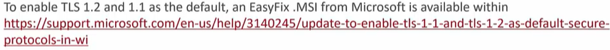

EDR and Integrated Endpoint Sensor- - Must be on Full Version SQL 2016 (Not SQL Express)
- - Full Text Search feature required
- This is sprcified during install, or added via the SQL installer
- - Integrated Endpoint Sensor is a Separate License
In Place Upgrade or Migration
- The recommended path is Migration to a new server
PROS- Easily Controlled Upgrade Path
- Allows new module and component testing without affecting production greatly
- Impact on production is very low
- Unsupported legacy OS's not impacted
CONS- Resources for new server and databases
- Slightly more work to migrate agents over
- The In-Place Upgrade
PROS- Minor increase in resources, no new server required
- No agent migration required (except within the aspect of movig unsupported OS's off the server)
CONS- Some legacy Server OS (Windows XP) are now unsupported, thus requiring major OS upgrade on the server
- The unsupported Legacy Workstation OS'S will need to migrate to another server prior to upgrade, which may require another server and install of 11/XG/XG SP1
- Backups and Disaster Recovery practices must be done prior to upgrading
- Increase management of Policies to control agent upgrades
TLS/Sigital Signature Changes
- TLS 1.2 is mandatory and cannot be disabled- Agent Communication over the HTTPS port utilizando TLS 1.2
- No Windows 7 e Server 2008R2, TLS 1.2

- Digital Signature checking is required and cannot be disabled
All server side components, modules, agent files require the Digital Signature to be validated
These certificates are inherently updtated from Windows Update
- Certificate Revocation List
If these signatures cannot be verified, the agent will not be able to Update
Server Platforms
- Datacenter e Standard
Windows 2012
2012 R2
2016
2019
SQL Considerations:
Com Endpoint Sensor:
- SQL 2016 and above, Full Version Only
Full Text Search enabled
Sem Endpoint Sensor
- 2016
2016 Express SP1
2017
For a complete list, reference Apex One System Requirements
Code Base (HTTPDB) has been removed from Apex One
Network topology/ Infrastructure: